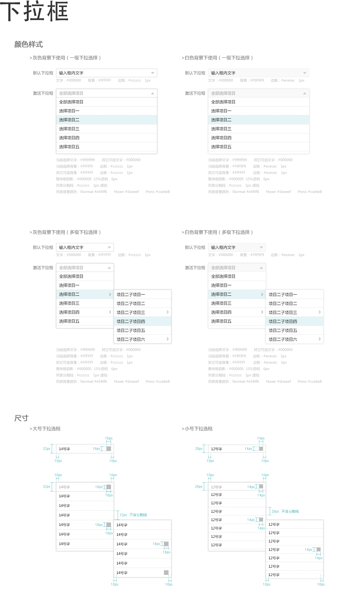

设计规范

开发者文档
下拉菜单，可以结合结合下拉框使用，也可以单独使用。 JS使用文档见 dropdown-js
组件不会自动适应每个选项的大小，如果出现有些选项过长，可以手动设定 a.dropdown-toggle 的宽度。
注意：下拉菜单有两种用法，一种是当做菜单来用，只放链接，另外一种是在表单中用来代替原生select，表单中的用法见这里 表单中使用下拉菜单。
- 更新 v1.4.2：修复了表单中使用
.sui-dropup样式时无法选中的bug。 - 更新 v1.4.1：修复了1.4.0版本由于分离图标文件导致下拉图标无法显示的bug。
- 更新 v1.2.1：大幅改进了易用性：
- 使用proxy实现下拉逻辑，异步加载的情况下也不需要手动初始化
- 增加了分组功能
- 增加了单条选项禁用功能
- 按钮下拉菜单增加了一个icon
- 更新 v1.1.5：增加了disabled状态，只要在容器上增加一个
.disabled即可。 - 更新 v1.1.3：修复在某些情况下下拉菜单高度会变高的bug。
- 更新 v1.0.1：修复按钮下拉菜单z-index设置不正确导致下拉菜单会被其他按钮遮住的问题。
不同样式和大小
下拉菜单有两种样式：默认样式和带边框的样式，添加 .dropdown-borderd 是带边框的样式。
带边框的下拉菜单有三种尺寸：默认，.dropdown-large，.dropdown-xlarge
在li上添加 '.active' 则表示默认选中
在容器上添加 .disabled 禁用。
不同的触发方式
下拉菜单有两种样式：默认样式和带边框的样式，添加 .dropdown-borderd 是带边框的样式。
带边框的下拉菜单有三种尺寸：默认，.dropdown-large，.dropdown-xlarge
在li上添加 '.active' 则表示默认选中
下拉分组
只需要在 li 上加上 .group-title 即可
不同下拉位置和对齐方式
默认的下拉菜单是和触发元素左对齐，通过添加 .align-right 可以实现右对齐
多级下拉
按钮下拉菜单
单独使用菜单
在表单中使用
在表单中使用下拉菜单来模拟select。注意，这里的html结构和上面仅仅当做下拉菜单是不同的。
使用隐藏input来存储用户选中的值，如果用户有选择则会在input上触发change事件。如果需要监听用户选中事件，可以通过input的onchange来做。如果想通过js来设置，目前未提供接口，可以通过js同时修改input值和span中的文案来实现。
自动补全
用一个简单的input结构加上一个箭头来模拟下拉菜单的样式.